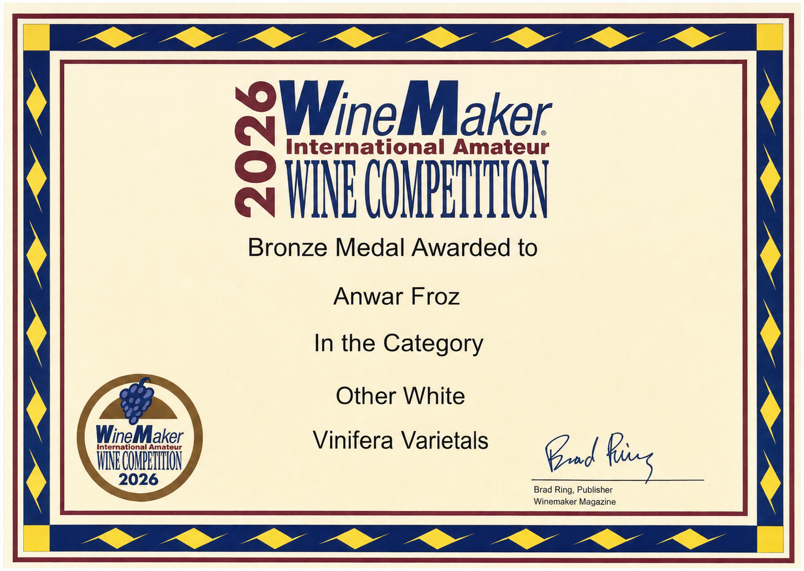
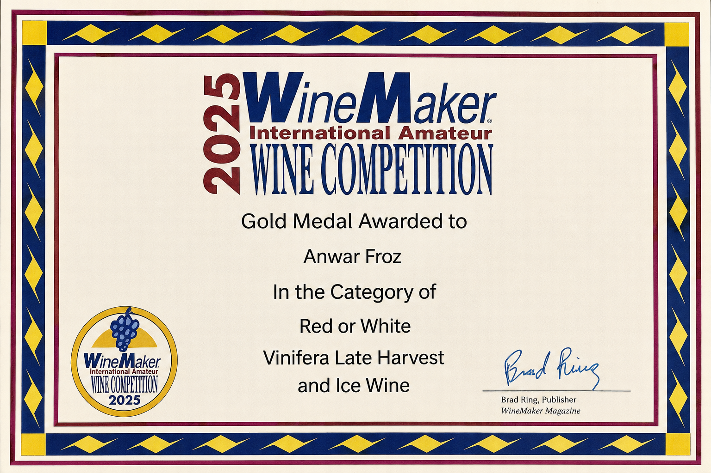
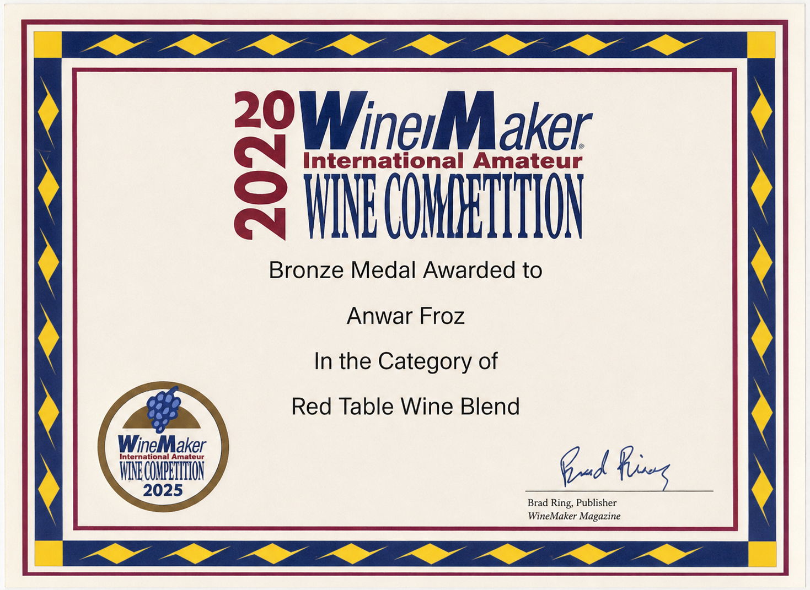
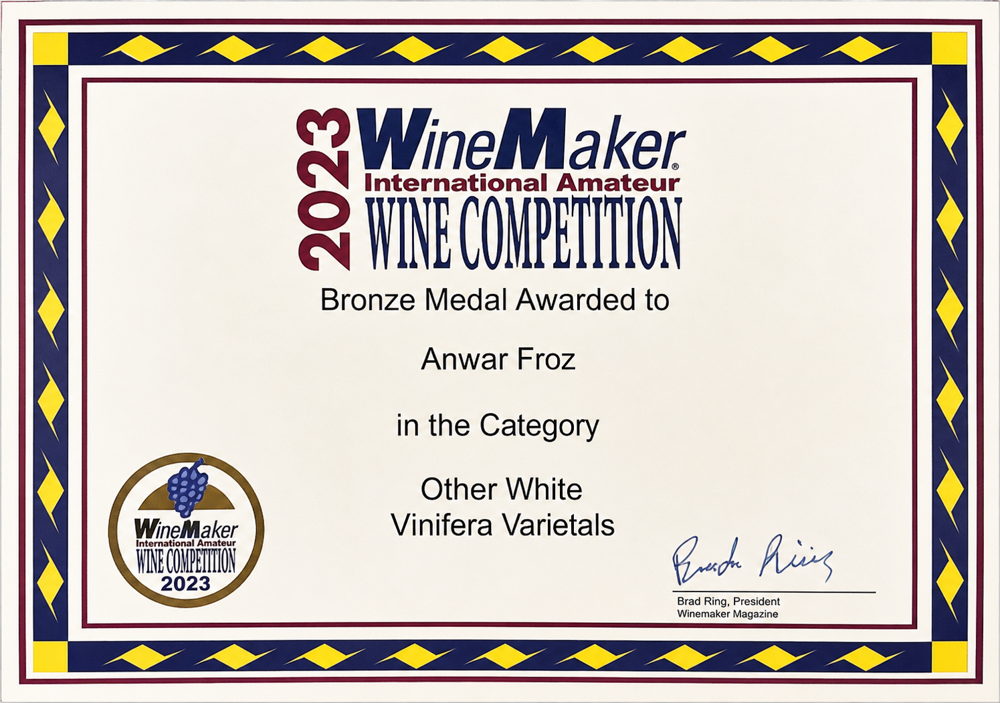

Médailles
Une sélection de médailles et de distinctions.
Cette page ne présente qu’un échantillon. Toutes les médailles et tous les certificats n’y figurent pas.
Les certificats ci-dessous sont des exemples sélectionnés et ne constituent pas un palmarès complet.



